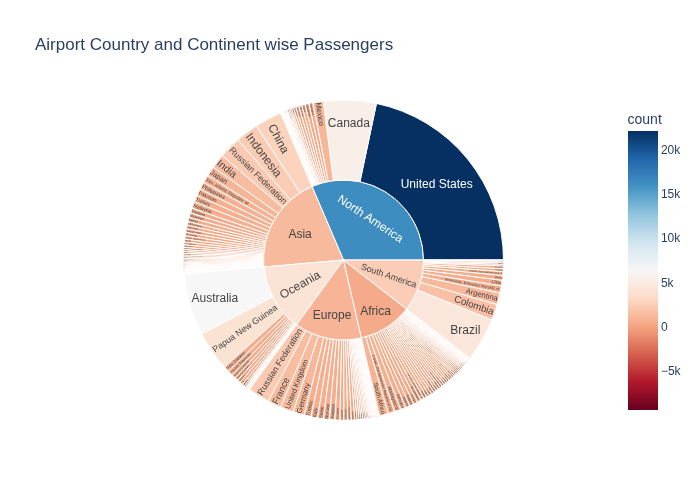

This sunburst chart titled "Airport Country and Continent-wise Passengers" provides a hierarchical visualization of passenger distribution across continents and countries. Created using Plotly Express, the chart displays continents in the inner ring and individual countries in the outer ring, with each segment's size and color intensity representing passenger counts. The visualization uses a RdBu color scale with a weighted midpoint for effective color distribution, where warmer colors indicate higher passenger volumes. The data is prepared by merging country-level passenger counts with continent information, creating a complete hierarchical dataset. This interactive visualization offers a comprehensive overview of global aviation patterns, making it easy to compare passenger traffic across both continents and individual countries simultaneously.